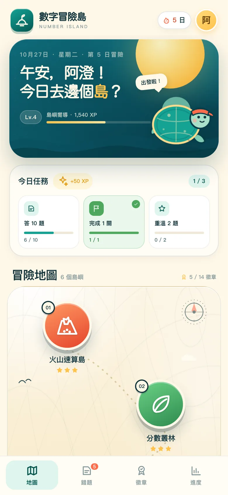
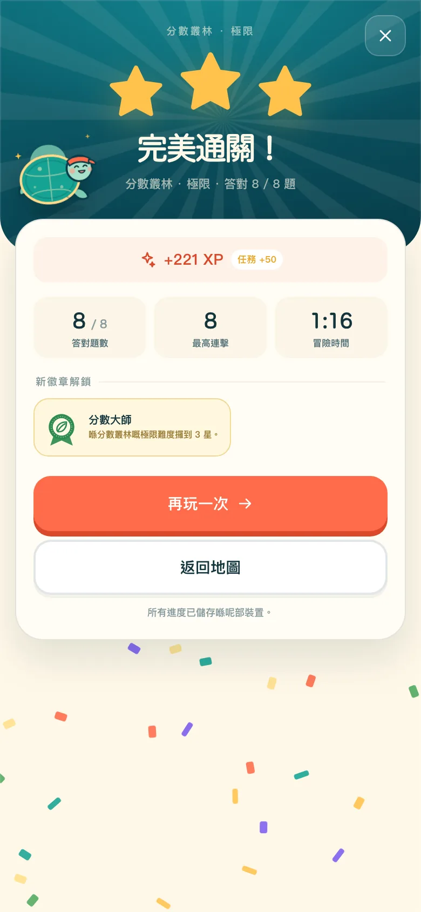
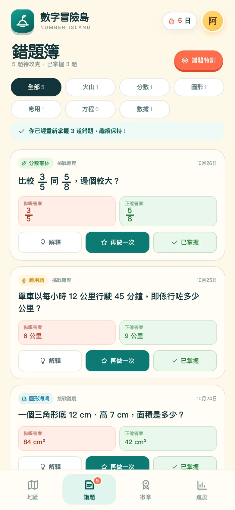
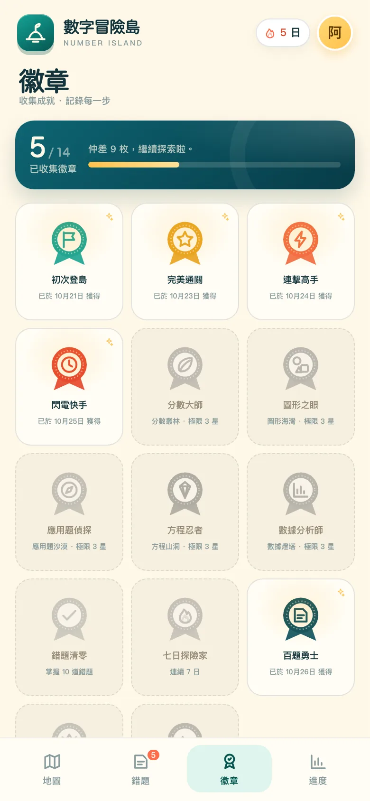
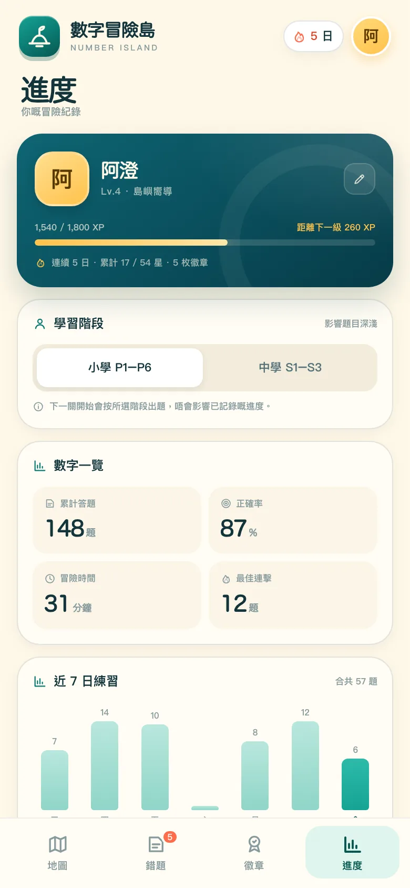

冇目標，做到麻木
做完十題，只係做完十題。冇星、冇進度、冇下一個目的地。
為 P4–S3 而設 · 免費試玩
數字冒險島將六個數學課題變成六個島嶼。揀難度、答題過關、收集徽章；答錯嘅題目會自動留低，變成下一次練習。

THE PROBLEM
學生唔係唔想練，而係唔知為咩練；錯咗之後，亦冇一個工具幫佢返去。數字冒險島把練習變成一個有起點、有終點、有回饋嘅循環。
做完十題，只係做完十題。冇星、冇進度、冇下一個目的地。
對完答案，錯題就散喺練習冊同截圖入面；下次唔會再遇到。
太淺覺得悶，太深覺得挫敗；最後只敢揀最安全嘅題目。
我哋將呢三件事，變成一個 3–5 分鐘嘅冒險循環。
THE ARCHIPELAGO
每個島嶼代表一個課題，由探索到極限，題目會跟住難度同學習階段變化。揀一個島，就係揀今日想練嘅能力。
四則運算、百分比與混合運算。限時挑戰你嘅反應同準確度。
試玩這個島由分數條到異分母加減，建立真正嘅分數感。
試玩這個島面積、周界、體積與角度，附圖解，唔需要死記公式。
試玩這個島購物、速率、平均數與百分比，一步步拆解生活情境。
試玩這個島由找未知數到一元一次方程，練習平衡兩邊。
試玩這個島圖表、平均數、中位數與概率，讓數字說故事。
試玩這個島A CLOSER LOOK
結算、錯題、徽章、進度——唔係裝飾，而係令學生知道下一步去邊。



THE LOOP
一關 6–8 題，約 3–5 分鐘。適合小息、搭車或者睡前。
六個課題，三種難度。由你決定今日想挑戰幾多。
四顆心、即時回饋、每題解釋。錯咗唔會即刻被審判。
星、XP、徽章；錯題自動入簿，答啱先叫掌握。
LEARNING DESIGN
四個原則，決定每一題點樣出現、幾時俾回饋、幾時算掌握。
每次都要學生自己揀答案或輸入答案，唔係睇住解釋。
記憶係喺提取嘅時候鞏固，唔係喺重讀嘅時候。答完即刻知啱錯，仲有簡短解題步驟。
越快修正，錯誤概念越難扎根。錯題重練答啱，先會標記為「已掌握」。
做過唔等於識；答啱先算掌握。自選島嶼與難度，冇排行榜，冇公開比較。
安全感越高，學生越願意試難少少嘅題目。與其叫學生「再做十題」，不如俾佢揀一個島，打一場冒險。
— 產品設計筆記
CURRICULUM
涵蓋香港數學課程常見課題，適合作課堂熱身、功課以外嘅練習，或者家長伴學。
PROGRESS
唔係只有「做完」同「未做」。星數、正確率、掌握度同錯題，全部有數睇。
家長可以睇到趨勢，但唔需要監控每一題。
老師可以喺課堂用 5 分鐘做熱身，唔使開帳號。

FAQ
關於年級、私隱、英文同收費。
主要為小四至中三（約 9–15 歲）而設。難度由探索到極限，會按學習階段調整。
唔使。打開就可以玩，冇帳號、冇 email、冇密碼。
第一次載入需要網絡；之後遊戲可以離線玩。如果你下載 index.html，亦可以直接開啟。
網站同學習說明有完整中英文。試玩版遊戲介面暫時以繁體中文為主，英文遊戲介面係下一步。
唔會。進度只存喺你部裝置嘅 localStorage，冇後端、冇追蹤。
而家未有。學校試行會先由班級碼同課程對應開始，老師視圖係 roadmap。
喺 GitHub 開 issue，或者直接聯絡作者。